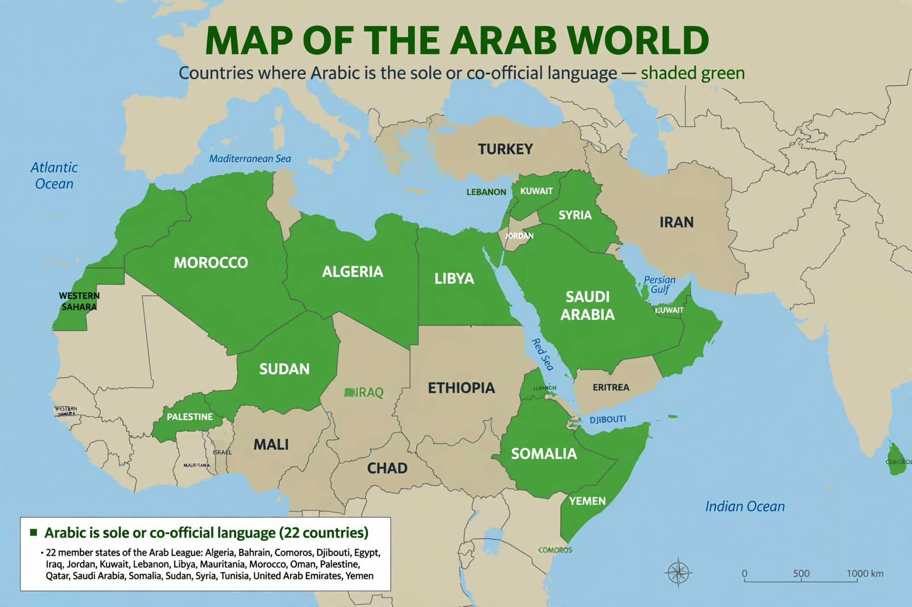

Arabic

Native to: the Arab world (Middle East and North Africa)
Native speakers: c. 380 million
Language family: Afro-Asiatic → Semitic → Central Semitic
Writing system: Arabic alphabet (abjad), right-to-left
Official language in: 26 countries; one of six UN official languages
Arabic (العربية) is a Semitic language of the Afro-Asiatic family, spoken by some 380 million native speakers across the Middle East and North Africa. It is the liturgical language of Islam and one of the six official languages of the United Nations. Arabic is characterised by diglossia: Modern Standard Arabic, descended from Classical Arabic of the Quran, is used in writing, media and formal speech, while everyday conversation uses regional dialects — Egyptian, Levantine, Gulf, Maghrebi and others — that can differ substantially from one another.
History
Arabic emerged in the northwestern Arabian Peninsula and spread rapidly with the Muslim conquests of the 7th and 8th centuries, displacing Aramaic, Coptic and Berber languages across a vast region. During the Islamic Golden Age it became a leading language of science, philosophy and mathematics; words such as algebra, algorithm, coffee and sugar entered European languages through Arabic. Its writing system, an abjad of 28 consonantal letters written right-to-left, was also adapted for Persian, Urdu and Ottoman Turkish.
Grammar and phonology
Arabic grammar is built on consonantal roots, usually of three letters: from k-t-b ("writing") derive kitāb (book), kātib (writer) and maktaba (library). Its sound system includes emphatic (pharyngealised) consonants and the pharyngeals /ħ/ and /ʕ/. See Grammar, Phonetics and Etymology.